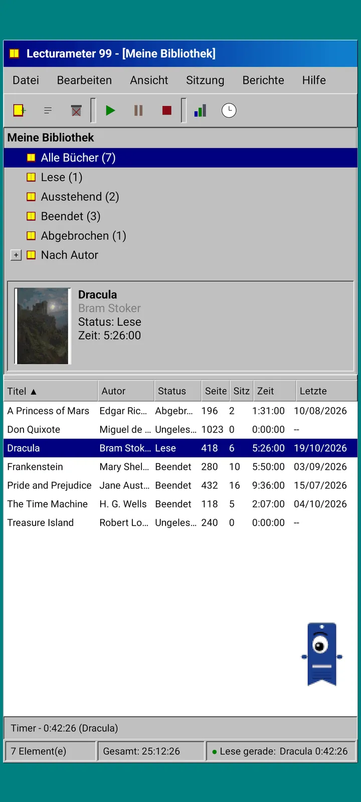
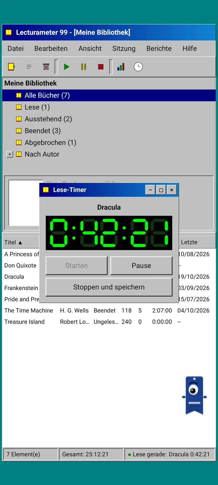
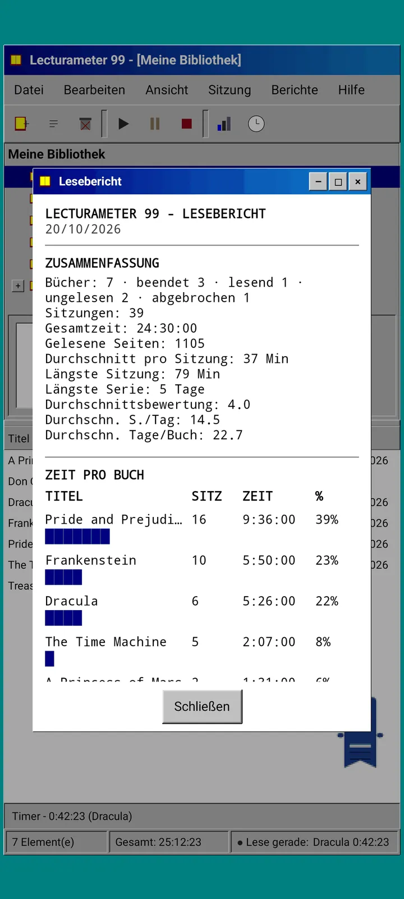
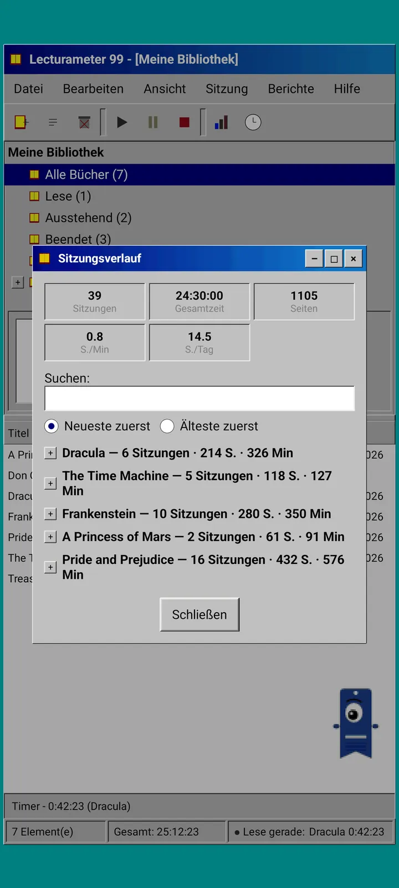
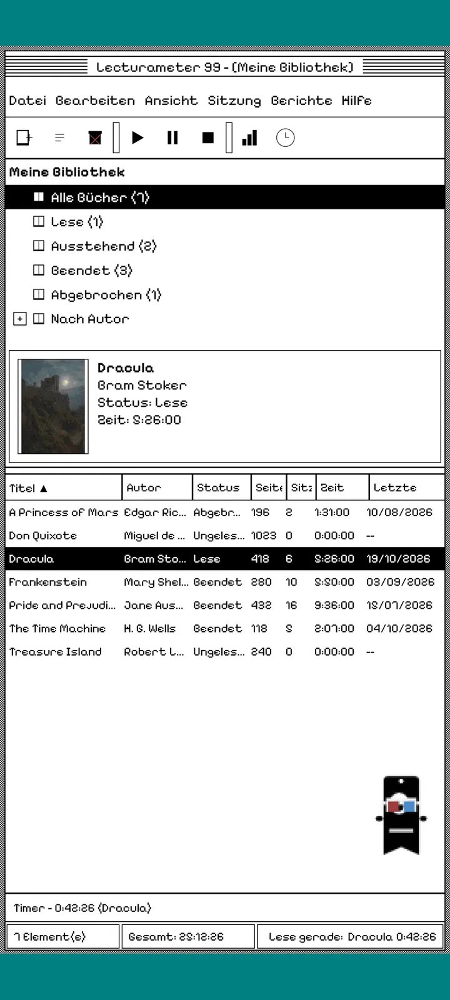
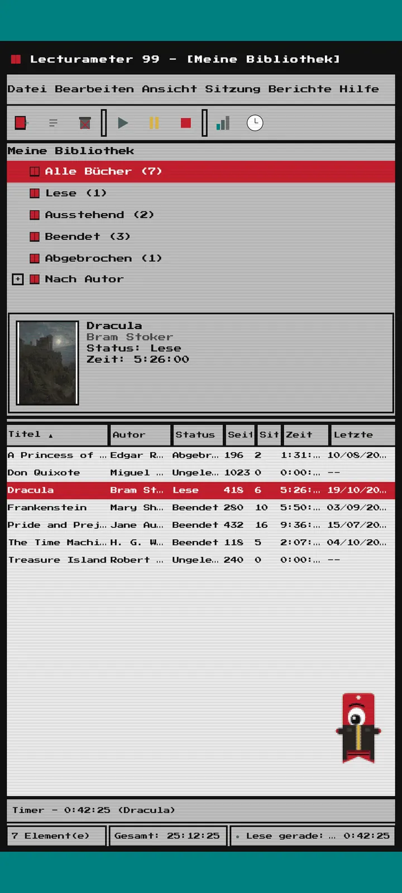
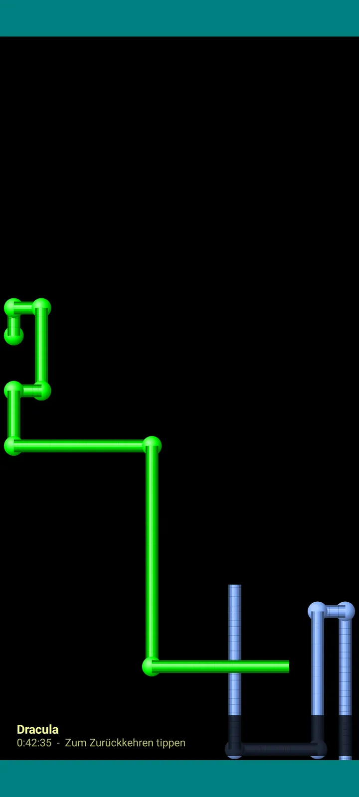

Lecturameter 1999
Lecturameter, als hättest du es 1999 von einer CD-ROM installiert. Ein alternativer Client für die App, mit Fenstern, Menüs und Tabellen, der deine echten Backups öffnet.

Was es ist
Ein Desktop-Programm aus den späten Neunzigern, das auf deinem Handy läuft. Ein Fenster über einem petrolfarbenen Desktop, eine Menüleiste, eine Symbolleiste, ein Ordnerbaum, eine dichte Tabelle und eine Statusleiste.
- Bibliotheksbaum: alle Bücher, am Lesen, ausstehend, beendet, abgebrochen und nach Autor
- Tabelle mit Titel, Autor, Status, Seiten, Sitzungen, Zeit und zuletzt gelesen. Tippe auf einen Spaltenkopf, um zu sortieren
- Echte Buchsuche, mit demselben Katalog, den Lecturameter nutzt
- Importiert und exportiert das Lecturameter-Backup und die Goodreads-CSV. Deine Daten gehen rein und raus, ohne dass etwas verloren geht

Warum es das gibt
Ein Experiment: die Idee von Lecturameter unter völlig anderen Designprämissen von Grund auf neu bauen, ohne die echte App anzufassen. Von allen Neuinterpretationen gefiel mir die von 1999 am besten, also habe ich sie als spaßige Übung fertiggestellt und zu einem vollständigen Client gemacht. Sie ist absichtlich einfacher als Lecturameter: Es ist ein Experiment und wird grundsätzlich nicht weiterentwickelt.
- Timer in einem schwebenden Fenster mit grüner LCD-Anzeige. Er lässt sich verschieben, in eine Taskleiste minimieren und zählt in der Statusleiste weiter
- Wenn du stoppst, fragt der Dialog zum Speichern der Sitzung nach deinen Seiten und berechnet dein Tempo, genau wie Lecturameter
- Gespeicherte Sitzungen sind Lecturameter-Sitzungen: Sie kommen zurück in die moderne App, wenn du ein Backup aus Lecturameter 1999 exportierst und in Lecturameter importierst.

Lesebericht
Die Statistiken sind ein gedruckter Bericht: Übersicht, Zeit pro Buch mit Blockbalken, Tempo in Seiten pro Tag, ein aus Zeichen gezeichneter Jahreskalender und die letzten sieben Tage.

Sitzungsverlauf
Sitzungen nach Buch gruppiert in einem Baum mit Plus und Minus, oben fünf Werte: Sitzungen, Gesamtzeit, Seiten, Seiten pro Minute und Seiten pro Tag.

Sitzung speichern
Datum, Minuten, erste und letzte Seite, Kommentar. Die Übersicht berechnet Seiten und Tempo, während du tippst. Erreichst du die letzte Seite, fragt sie, ob du das Buch beendet hast.

Pagi 99
Auch Pagi reist ins Jahr 1999: verpixelt und frei auf dem Bildschirm unterwegs wie die Büroassistenten von damals. Du kannst ihn ziehen, er sagt einen Satz, wenn du ihn antippst, und zeigt Tipps in gelben Sprechblasen.
Themen
Classic 98 ist kostenlos und voreingestellt. Das Paket bringt sechs weitere, jedes mit eigenem Hintergrund und eigenen Sounds.

Wähle es im Menü Ansicht
Ansicht, Thema... öffnet ein Fenster mit den sieben Themen. Der Wechsel erreicht alle Fenster, den Timer und Pagi auf einmal.
- Classic 98, kostenlos und voreingestellt: graue Fenster, marineblaue Titelleisten und ein petrolfarbener Desktop
- Themenpaket: 1984, Gumdrop, Memory, Towers, Core und 8-bit
- Jedes Thema bringt seinen eigenen Desktop-Hintergrund und eigene Sounds für Tipps, Fenster und den Timer mit
- Ansicht, Themensounds schaltet die Sounds aus, wenn du lieber in Stille liest

Classic 98
Graue Fenster, marineblaue Titelleisten und ein petrolfarbener Desktop. Kostenlos, damit startet die App.

1984
Ein Ein-Bit-Desktop in Schwarz-Weiß, mit Punktmustern und eckigen Fenstern.

Gumdrop
Durchscheinendes buntes Plastik, runde Schaltflächen und Streifen im Hintergrund.

Memory
Die Menüs einer Disc-Konsole aus den Neunzigern, in dunklen Blautönen.

Towers
Noch eine Disc-Konsole aus den Neunzigern, nachtblau mit hellblauen Linien.

Core
Eine Konsole in Schwarz und Grün, wie ein Bildschirm, der nie ausgeht.

8-bit
Dicke Pixel, wenige Farben und klobige Buchstaben.

Teste es, bevor du zahlst
Tippe auf ein gesperrtes Thema und die ganze App wechselt dazu. Schließt du ohne zu kaufen, kommt das vorherige Thema zurück.
Bildschirmschoner
Sie erscheinen nur, während der Timer läuft und du das Handy liegen lässt. Sie warten 1, 3 oder 5 Minuten, oder nie. Ein Tippen bringt dich zurück und der Timer zählt weiter.

Fliegende Bücher
Pixelbücher, die mit ihren Einbänden über einen schwarzen Bildschirm flattern.

Buchstabenfeld
Buchstaben aus vielen Alphabeten, die vorbeiziehen wie ein Sternenfeld.

Seitenrohre
Rohre aus Seiten, die sich selbst zeichnen, bis der Bildschirm voll ist.

Hüpfender Pagi
Pagi prallt von den Bildschirmrändern ab.

Lese-Uhr
Die Sitzungszeit in großen LCD-Ziffern.

Kostüme für Pagi
Acht Kostüme für Pagi 99. Du wählst sie unter Ansicht, Pagis Kostüm... und kannst sie vor dem Bezahlen anprobieren.
- Kassettenspieler
- Verkehrt herum getragene Kappe
- 3D-Brille
- Neon-Sonnenbrille
- Diskette in der Hand
- Lederjacke
- Taschen-Haustier
- Pappkrone
Shop
Die App ist kostenlos und vollständig, um dein Lesen zu erfassen. Was du kaufen kannst, ändert nur das Aussehen.
Die ganze App, ohne Zeitlimit.
- Bibliothek, Suche, Timer und Sitzungen
- Lesebericht und Sitzungsverlauf
- Lecturameter-Backup und Goodreads-CSV, rein und raus
- Thema Classic 98 und Pagi 99
- Kein Konto und keine Werbung
Einmalzahlungen, keine Abos.
- Themenpaket, 3,49 €: 6 Themen mit Hintergrund und Sounds, dazu die Bildschirmschoner
- Bildschirmschoner, 1,99 €: die 5 Bildschirmschoner
- Pagi-Kostüme, 1,99 €: die 8 Kostüme
- Das ganze 1999, 4,49 €: Themen, Bildschirmschoner und Kostüme
Optionales Trinkgeld im Menü Hilfe, falls du mir einen Kaffee spendieren willst.
Themen und Kostüme lassen sich vor dem Bezahlen live ausprobieren. Schließt du ohne zu kaufen, kommt zurück, was du vorher hattest.
Was sich im Vergleich zu Lecturameter ändert
Wie bei Lecturameter
- Dieselben Daten: Bücher, Sitzungen, Status, Bewertungen und Notizen. Die Backup-Datei ist in beiden Apps dieselbe.
- Buchsuche nach Titel oder Autor.
- Echter Timer: Er zählt im Hintergrund weiter, sogar wenn du die App schließt.
- Kein Konto, keine Werbung, keine Verbindung außer für die Buchsuche.
- Dieselben Sprachen wie Lecturameter.
Nur in der 1999-Edition
- Eine Desktop-Oberfläche von 1999. Kein Material.
- Echte Fenster: Du ziehst sie, minimierst sie und schließt sie mit dem Kreuz.
- Lesebericht als Text, mit einem aus Zeichen gezeichneten Kalender.
- Kontextmenü bei langem Drücken und Tastenkürzel, wenn du eine Tastatur anschließt.
- Verpixelter Pagi 99 mit Tipp-Sprechblasen.
- Optionale Themen mit eigenem Hintergrund und eigenen Sounds, Bildschirmschoner während der Timer läuft und Kostüme für Pagi.
Was absichtlich fehlt
- Kein Pro und kein Abo. Das Erfassen deines Lesens ist komplett kostenlos, der Shop verkauft nur Optik.
- Keine Challenges, Bingos, jährliches Wrapped oder Widgets.
- Keine immersive Sitzung, keine Umgebungsgeräusche und kein Backup in Google Drive. Das Backup wird als Datei gespeichert.
Geschlossener Test
Lecturameter 1999 ist im geschlossenen Test auf Google Play. iOS kommt später, noch ohne Termin.
- Tritt der Gruppe bei groups.google.com/g/lecturameter-1999
- Melde dich als Tester an unter play.google.com/apps/testing/com.lecturameter.r1999
- Installiere es über Google Play
Im geschlossenen Test auf Google Play, iOS später. Lies den Blogbeitrag , um zu sehen, woher es kommt und was dich erwartet.